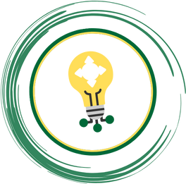

A personal SWOT analysis is a tool used to evaluate your career goals. SWOT stands for strengths,
weaknesses, opportunities and threats. It considers all factors, whether positive, negative,
external or internal. Internal factors are elements you bring to the analysis, such as strengths and
weaknesses. External factors are elements outside of you, including opportunities and threats.
Before the start of the academic year at HZ UAS, every student had to fill in a personal SWOT
analysis. By doing that, each student can analyze their personal strengths and weaknesses as well as
opportunities and possible threats for their studies. In this article, I will list my answers of the
SWOT analysis questions and provide more detailed information about them.

What are my strengths?
I am a dependable and organised person who can adapt to any situation and work alone
or in
a team. Critical thinking is one of my strongest assets. When faced with complex problems or
challenging
situations, I approach them with a clear and rational mindset, actively seeking out multiple
perspectives and considering all available evidence before making decisions.
What are my weaknesses?
I sometimes struggle with anxiety, which can make certain situations feel more
challenging
than they need to be. It is like having a constant worry in the back of my mind that can make it
hard to
relax or fully enjoy the present moment.
What are my opportunities?
My opportunities are: professional development and team collaboration.